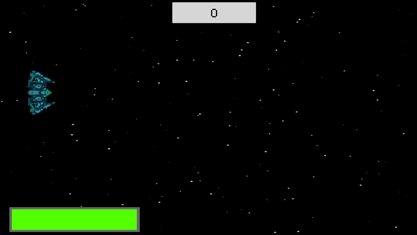
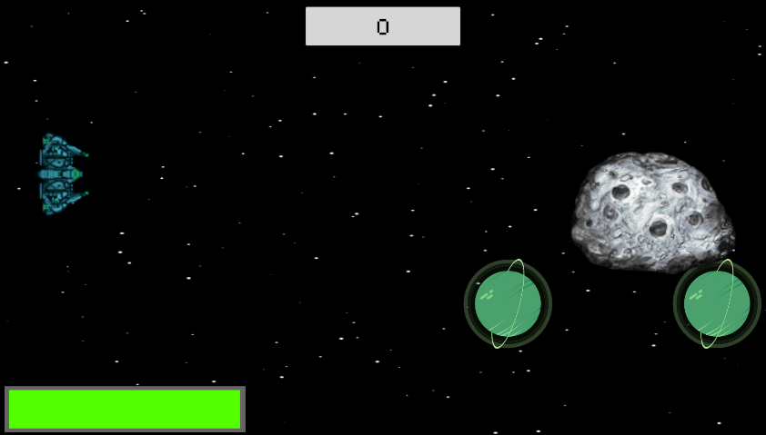

PLANET DESTROYER


Planet Destroyer is an iteration of the classic arcade game, Asteroids. Shoot the planets and avoid the asteroids hurtling towards you at an increasing speed. This gameplay showcases basic movement and mechanics to emphasize communicative design. This was an individual project. [2026 Unity]